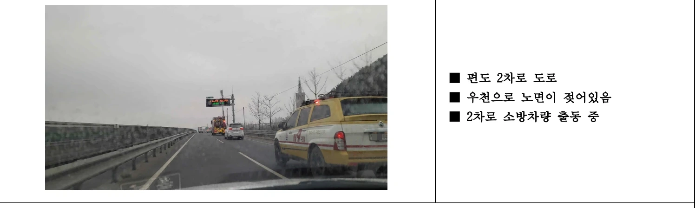

769. Hai cách lái xe nào là an toàn nhất trong tình huống sau?

- ①Khi có xe khẩn cấp tiến đến gần, xe thông thường phải nhường đường về hai bên trái phải đường.
- ②Bám theo phía sau xe khẩn cấp sẽ có thể đi nhanh hơn nên lái xe bám theo.
- ③Lái xe tăng tốc để xe khẩn cấp ở bên phải không thể chuyển làn đường.
- ④Xe khẩn cấp đã làm xong nhiệm vụ và đang trên đường quay về thì không bật đèn báo động và còi hú nên không cần phải nhường đường.
- ⑤Nếu phát hiện có xe khẩn cấp đang đi theo ở phía sau, thì phải tăng tốc để không bị xe khẩn cấp đó vượt lên trước.
Xem đáp án
Đáp án
① Khi có xe khẩn cấp tiến đến gần, xe thông thường phải nhường đường về hai bên trái phải đường.
④ Xe khẩn cấp đã làm xong nhiệm vụ và đang trên đường quay về thì không bật đèn báo động và còi hú nên không cần phải nhường đường.
Căn cứ
Khi phát hiện xe ưu tiên đang làm nhiệm vụ tại giao lộ, hãy tránh khỏi giao lộ rồi dừng lại; ở nơi khác, nhường đường để xe đó đi trước. Bám theo xe ưu tiên hoặc tăng tốc để không bị xe đó vượt là không an toàn.
Phần căn cứ là bản dịch máy để tham khảo.